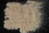

|
|
(For further information on spectroscopy, see:
http://speclab.cr.usgs.gov)
TITLE: Grossular NMNH155371 Garnet DESCRIPT
DOCUMENTATION_FORMAT: MINERAL
SAMPLE_ID: NMNH155371
MINERAL_TYPE: Nesosilicate
MINERAL: Grossular (Grossularite) (Garnet group)
FORMULA: Ca3Al2(SiO4)3
FORMULA_HTML: Ca3Al2(SiO4)3
COLLECTION_LOCALITY: Pear Gillis Farm, Beach Glen, Buncombe Co, N_C
ORIGINAL_DONOR: Smithsonian
CURRENT_SAMPLE_LOCATION: USGS Denver Spectroscopy Laboratory
ULTIMATE_SAMPLE_LOCATION: USGS Denver Spectroscopy Laboratory
SAMPLE_DESCRIPTION:
Forms series with Andradite, with Hydrogrossular, with Uvarovite.
Sample was hand-picked for analysis. See other grossular garnet in library for comparison. Original sample had a fair amount of diopside contamination.
IMAGE_OF_SAMPLE:

END_SAMPLE_DESCRIPTION.
XRD_ANALYSIS:
Sample is grossular plus a small peak at 1.879A due to a trace of an unknown contaminant.
Salisbury, J. W., Walter, L. W., and Vergo, N., 1987, Mid-Infrared (2.1-25µm) Spectra of Minerals: First Edition, U.S. Geological Survey Open File Report 87-263.
END_XRD_ANALYSIS.
COMPOSITIONAL_ANALYSIS_TYPE: EM(WDS) # XRF, EM(WDS), ICP(Trace), WChem
| COMPOSITION KEYWORD |
Oxide ASCII |
Amount | Weight Percent, % |
Oxide html |
|---|---|---|---|---|
| COMPOSITION: | SiO2 | 38.84 | wt% | SiO2 |
| COMPOSITION: | TiO2 | 0.70 | wt% | TiO2 |
| COMPOSITION: | Al2O3 | 17.95 | wt% | Al2O3 |
| COMPOSITION: | FeO | 7.08 | wt% | FeO |
| COMPOSITION: | MnO | 0.51 | wt% | Mn0 |
| COMPOSITION: | MgO | 0.15 | wt% | MgO |
| COMPOSITION: | CaO | 35.81 | wt% | CaO |
| COMPOSITION: | Na2O | 0.05 | wt% | Na2O |
| COMPOSITION: | K2O | 0.03 | wt% | K2O |
| COMPOSITION: | Total | 101.11 | wt% | |
| COMPOSITION: | O=Cl,F,S | wt% | ||
| COMPOSITION: | New Total | wt% |
COMPOSITION_TRACE: None
COMPOSITION_DISCUSSION:
Microprobe analysis of the hand-picked sample indicate the grains are relatively homogeneous, with approximately 1 wt% variation in FeO and CaO. Average of 11 analyses suggest that this sample is a solid-solution grossularite with andradite.
Salisbury, J. W., Walter, L. W., and Vergo, N., 1987, Mid-Infrared (2.1-25µm) Spectra of Minerals: First Edition, U.S. Geological Survey Open File Report 87-263.
END_COMPOSITION_DISCUSSION.
MICROSCOPIC_EXAMINATION:
mode:
97 vol% garnet
3 vol% diopside
average grain size gr sz = 45 µm
Some biaxial, moderate relief grains present- probably diopside contaminant mentioned in sample description open file report. Sample composed of isotropic grains with refractive index > glycerin. Platy habit indicates parting. All observations consistent with this sample being nearly pure grossularite. G. Swayze
END_MICROSCOPIC_EXAMINATION.
SPECTROSCOPIC_DISCUSSION:
END_SPECTROSCOPIC_DISCUSSION.
SPECTRAL_PURITY: 1b2c3b4b # 1= 0.2-3, 2= 1.5-6, 3= 6-25, 4= 20-150 microns
| LIB_SPECTRA_HED: | where | Wave Range | Av_Rs_Pwr | Comment |
|---|---|---|---|---|
| LIB_SPECTRA: | splib04a r 1835 | 0.2-3.0µm | 200 | g.s.= 45 µm |
| LIB_SPECTRA: | splib05a r 2943 | 0.2-3.0µm | 200 | g.s.= |
| LIB_SPECTRA: | splib06a r 8573 | g.s.= | ||
| LIB_SPECTRA: | splib06a r 8586 | g.s.= |
{kind=link}